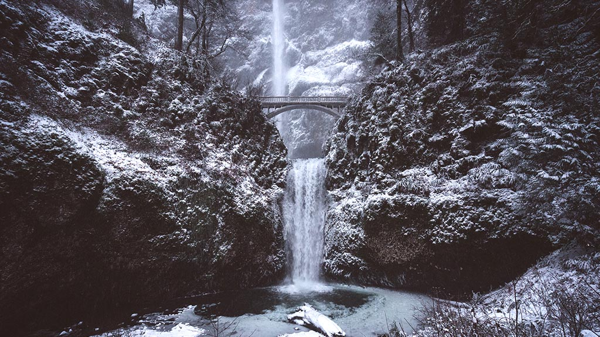

Snowpack Still Below Normal
The Mercury News | March 5, 2018
 Last week’s major snowstorms brought a welcome change to the Sierra Nevada Range — the source of nearly one-third of California’s water — boosting the overall snowpack by nearly 80 percent. But despite the blizzards dumping 5 to 8 feet of fresh snow, the overall snowpack remains well below normal. Last Monday, the statewide snowpack was at 22 percent of the historic average. On Monday, it had increased to 37 percent. "We’re still far below normal,” said Doug Carlson, a spokesman for the California Department of Water Resources. “Today is barely a third of what it should be on this date. Although the storms were notable compared with the extraordinarily dry month of February, they were not a game-changer. Californians are still encouraged to make water conservation a way of life.”